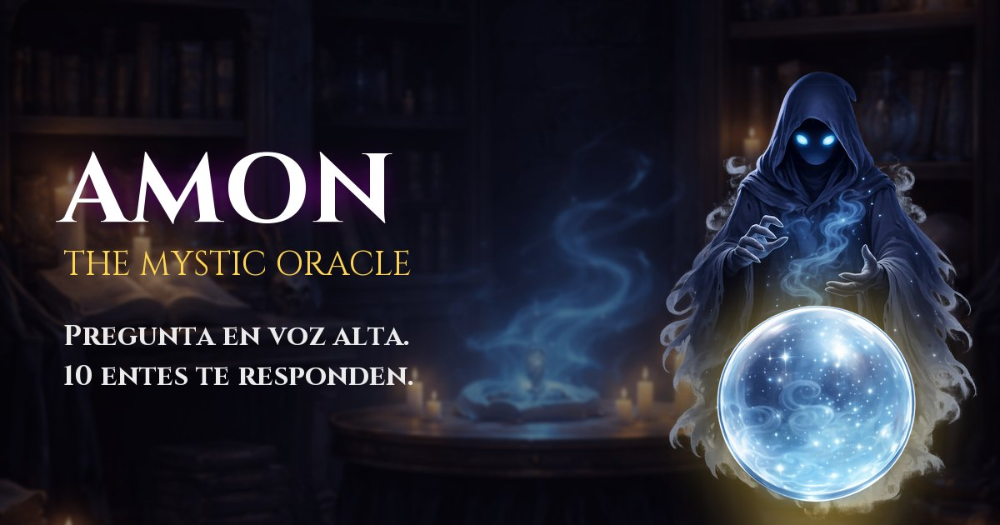
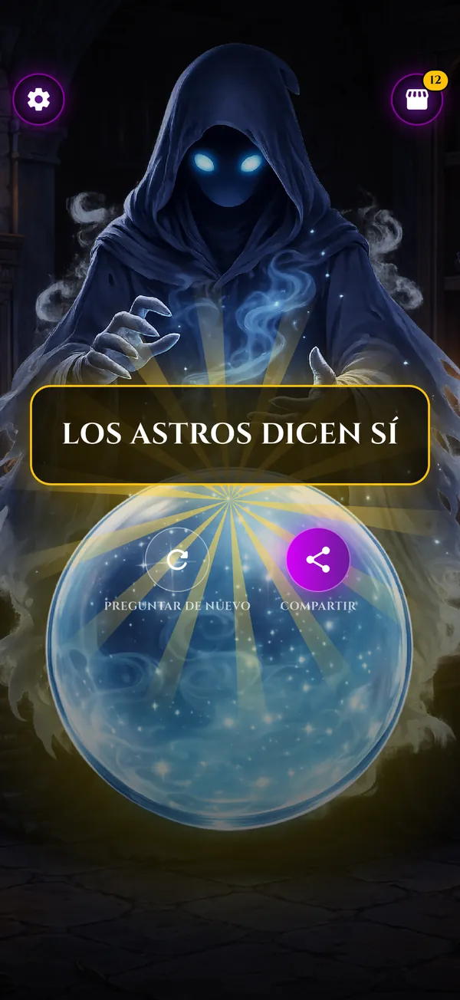
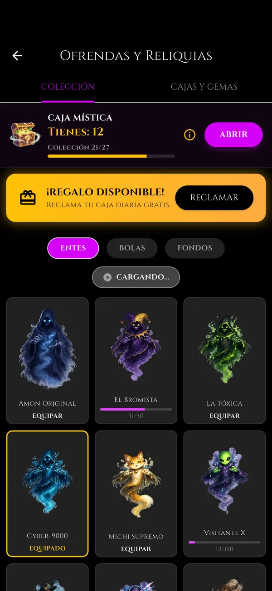

Press kit
Recursos oficiales de AMON: The Mystic Oracle para medios y creadores.
Datos
| Nombre | Amon: The Mystic Oracle |
|---|---|
| Desarrollador | Luis Angel Caballero Jardon (desarrollador independiente), Metepec, Estado de México |
| Lanzamiento | 20 de enero de 2026 en Google Play |
| Plataformas | Android (Google Play). iPhone: próximamente en App Store. |
| Precio | Gratis, con anuncios y compras opcionales |
| Género | Entretenimiento / casual |
| Idiomas | 10: español, inglés, portugués, francés, alemán, ruso, indonesio, chino, japonés y coreano |
| Sitio | llcaballeroll.github.io/amon_oracle_web |
| Contacto | amon.soporte@gmail.com |
Descripción corta
Mantén la huella, haz tu pregunta en voz alta y suelta: AMON, el oráculo encapuchado, medita y revela su respuesta en la bola de cristal. Colecciona 10 entes con personalidad propia —del Capitán Pirata al Michi Supremo— y comparte tu profecía.
Descripción
AMON convierte la vieja bola de cristal en un pequeño ritual para el teléfono. El jugador mantiene la huella, hace su pregunta en voz alta y el reconocimiento de voz del sistema la pasa a texto; después el ente equipado responde con su propio tono: solemne, bromista, tóxico, robótico, felino, alienígena, pirata, zoomer, cavernícola o zen.
Las cajas místicas dan cartas para desbloquear entes, bolas y fondos (30 objetos en total). Las probabilidades se muestran antes de abrir y las cajas se consiguen gratis cada día. Cada respuesta se puede compartir como una imagen con la pregunta y la profecía. Es un juego de entretenimiento: las respuestas son al azar.
Características
- Pregunta con tu voz: mantén la huella, habla y suelta.
- 10 entes, cada uno con sus propias respuestas.
- 10 bolas y 10 fondos para combinar.
- Cajas místicas con probabilidades visibles; regalo diario y cajas por video.
- Imagen para compartir con tu pregunta y la respuesta.
- Sin cuentas: todo se guarda en el teléfono.
Imágenes



Key art 1200 × 630 (JPG)

Capturas en el .zip (1320 × 2868)

Entes en PNG en el .zipPuedes usar estos materiales para hablar de AMON. Por favor no los modifiques de forma que confunda sobre el juego.